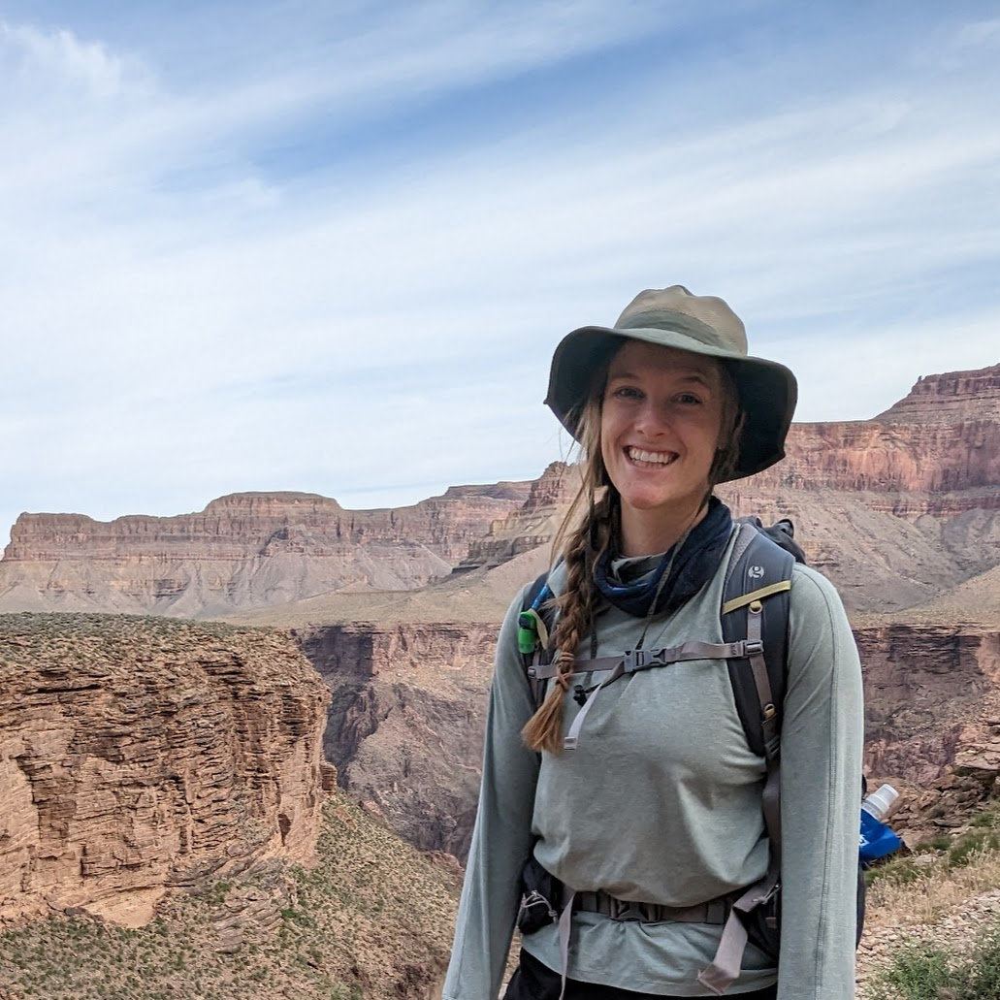

Blair Mirka
Ph.D. Candidate
Welcome to my website! I hold a Ph.D. from the University of New Mexico, where my work focused on GIS, Remote Sensing, Computer Vision, and Digital Museum Studies. This site showcases my research, projects, and professional work using geospatial analysis, machine learning, and remote sensing to better understand complex spatial systems. Take a load off and stay awhile!